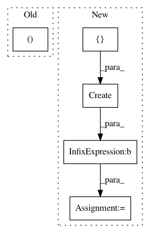

555e7d8f67b8426556aaa40fb0a248de3a40171e,solutionbox/code_free_ml/mltoolbox/code_free_ml/data/analyze_data.py,,make_transform_graph,#Any#Any#Any#,651
Before Change
preprocessing_fn = make_preprocessing_fn(output_dir, features)
// copy from /tft/beam/impl
inputs, outputs = impl_helper.run_preprocessing_fn(
preprocessing_fn=preprocessing_fn,
schema=tft_input_schema)
output_metadata = dataset_metadata.DatasetMetadata(
After Change
with tft_impl.Context(temp_dir=temp_dir):
// Not going to transform, so no data is needed.
train_data = p | beam.Create([])
transform_fn = (
(train_data, tft_input_metadata)
| "BuildTransformFn" // noqa
>> tft_impl.AnalyzeDataset(preprocessing_fn)) // noqa
// Writes transformed_metadata and transfrom_fn folders
_ = (transform_fn | "WriteTransformFn" >> tft_beam_io.WriteTransformFn(output_dir)) // noqa
// Write the raw_metadata
metadata_io.write_metadata(
In pattern: SUPERPATTERN
Frequency: 3
Non-data size: 5
Instances
Project Name: googledatalab/pydatalab
Commit Name: 555e7d8f67b8426556aaa40fb0a248de3a40171e
Time: 2017-05-19
Author: brandondutra@google.com
File Name: solutionbox/code_free_ml/mltoolbox/code_free_ml/data/analyze_data.py
Class Name:
Method Name: make_transform_graph
Project Name: tensorflow/transform
Commit Name: 14ee57f33aa9a07fa6440c049fefd47099dbc5ae
Time: 2017-04-26
Author: no-reply@google.com
File Name: tensorflow_transform/beam/impl_test.py
Class Name: BeamImplTest
Method Name: testTransformFnExportAndImportRoundtrip
Project Name: tensorflow/transform
Commit Name: 12f1b34f75c7b96376de42998984640e834a1253
Time: 2017-10-06
Author: tf-transform-dev@google.com
File Name: tensorflow_transform/beam/tft_beam_io/beam_metadata_io_test.py
Class Name: BeamMetadataIoTest
Method Name: testWriteMetadataDeferredProperties